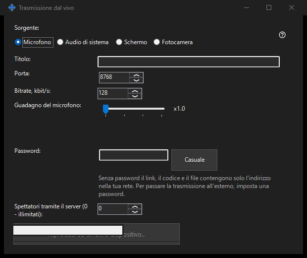

Trasmissione in diretta
Scopo
Condividi schermo, singola finestra, fotocamera, microfono o audio di sistema da Share Manager. Apri una diretta nel visualizzatore a 64 bit tramite link, codice o file .fmsbcast. La cattura inizia solo premendo Avvia.


In questo ordine
Scegli la sorgente, poi monitor o singola finestra, oppure fotocamera e modalità. Prima di Avvia controlla titolo, password spettatore, audio e accesso LAN. Gli spettatori ricevono immagine e suono scelti, inclusi contenuti privati visibili. Copia un link o salva un file .fmsbcast quando sei in onda. Arresta termina la sessione; chiudere la finestra catturata termina anche la sua diretta.
Gli elementi
Trasmissione in diretta
Scegli la sorgente, poi monitor o singola finestra, oppure fotocamera e modalità. Prima di Avvia controlla titolo, password spettatore, audio e accesso LAN. Gli spettatori ricevono immagine e suono scelti, inclusi contenuti privati visibili. Copia un link o salva un file .fmsbcast quando sei in onda. Arresta termina la sessione; chiudere la finestra catturata termina anche la sua diretta.
Impostazioni del gestore · Impostazioni condivisione SFTP · Impostazioni server di scambio